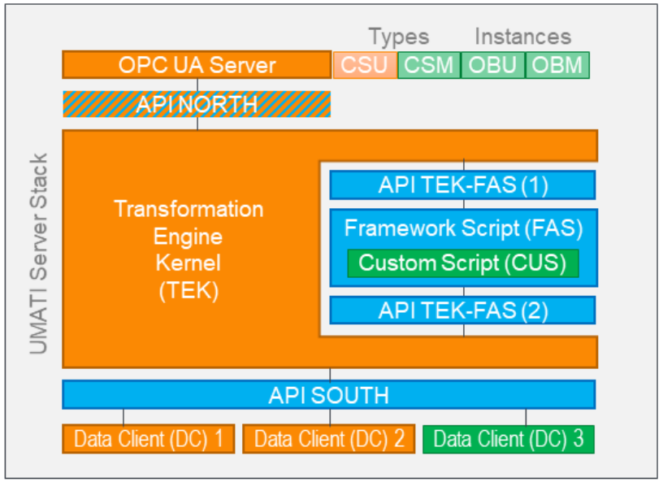
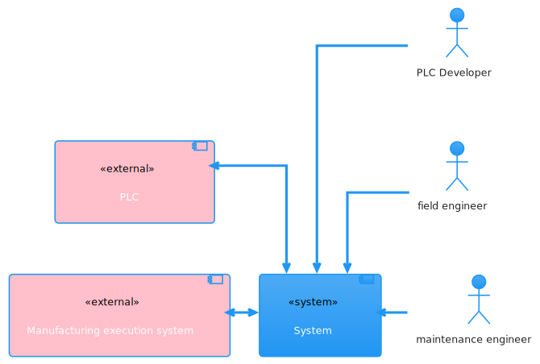
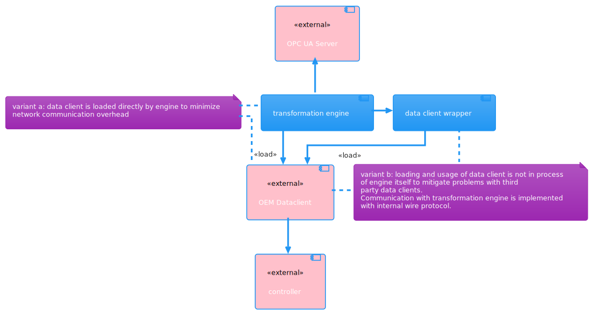

umati Transformation Engine
Foreword
The VDW-Forschungsinstitut e.V. is currently working with partners and its members to create a specification of a TransformationEngine.
This document describes the development process and the decisions made to develop the first API. Currently this is designed to be implemented in C to allow the application on any necessary platform and device.
Application Warning Notice
This DRAFT with date of issue 2021-10-01 is being submitted to the public for review and comment. Because the final API Specification may differ from this version, the application of this draft is subject to special agreement.
Comments are requested:
- preferably as a file by e-mail to g.goerisch@vdw.de
- or in paper form to VDW-Forschungsinstitut e.V., Lyoner Straße 18, 60528 Frankfurt
Partners
- Bridgefield (Magdeburg)
- iT Engineering Software Innovations (Pliezhausen)
- Pragmatic Minds (Kirchheim/Teck)
Machine Tool Builders
- CHIRON Group (Tuttlingen)
- DMG Mori (Pfronten)
- EMAG (Salach)
- GROB Werke (Mindelheim)
- Gebr. Heller (Nürtingen)
- Liebherr Verzahntechnik (Kempten)
- Trumpf Werkzeugmaschinen (Ditzingen)
- United Grinding Group (Bern)
Glossary
| API | Application Programming Interface |
| DC | Data Client |
| Data Source | Actual OEM data source or controller of manufacturing machine which is accessible by a south API compatible data client implementation |
| North API | 'north bound' API to be used to provided data and functionality from transformation engine to a connected OPC UA server |
| OPC UA | OPC Unified Architecture: machine to machine communication protocol for industrial automation |
| South API | 'south bound' API to be used to integrate data sources in transformation engines |
| TE | Transformation Engine |
Purpose and Scope
The OPC UA Server with the OPC 40501-1 UA for Machine Tools companion specification on the north side of the stack is the access for OPC-UA clients on machine or factory level which can communicate to local MES/PPS/ERP or cloud services. The Data Clients on the south side of the stack are the different sources and sinks for data and machining functions, i.e. these blocks may be for example NCs, PLC, IPCs and “intelligent” sensors or actuators in the machine. In most cases, all these sinks and sources provide non-standardized, proprietary interfaces. Hence, the objective of the proposed TransformationEngine is to transfer and convert data and commands between the OPC UA Server on the north side of the stack and the data clients on the south side. As an important requirement, the conversion must be provided in a standardized way.
This document describes the requirements on this standardization. Further details on the functionality of the different components in the stack and on single requirements are given below.

Figure 1 - Conceptual design of the TE
System context
This is a simplified description of the system context the South API specification, defined here and in accompanying header files, is intended to be used in.

Container diagram
This diagram describes possible Transformation Engine implementation containers assumed/anticipated by this specification.
The term container in this context is used for separately running applications native to the target platform (see also: C4 Model).

For reference: The South API is intended to be used for either directly connecting the transformation engine with an OEM data client or indirectly through a separate data client wrapper.
The OPC UA server and OEM data client are marked as external in this diagram to symbolize different implementation responsiblities.
It is expected to have deployment scenarios where transformation engine and data client wrapper are implemented by the same implementor and combined with 3rd party OEM data client and OPC UA server implementations, which is why a South API definition and later a North API definition are needed in the first place.
Architectural Drivers
The API design is mainly guided by the following selection of architectural drivers for now.
| criteria | meaning in project context |
|---|---|
| extensibility | multiple different data clients must be supported by a single transformation engine |
| availability | implementing data clients must be easy and not require special runtimes or tools |
| portability I | implementing data clients must not require OPC UA |
| portability II | chosen data client technology must at least enable Windows and Linux host systems |
| reusability | implemented data clients must be usable by different transformation engine implementations |
Decisions summary
The current South API is mainly based on decisions described in the table below.
Apart from these decisions certain parts of the OPC UA specification were also used. These are mentioned and linked explicitly from the actual South API specification.
The impact of these references was carefully limited to not add additional dependencies for data client implementors (see portability I criteria) and mainly used to simplify later interactions between data clients and a North API that will be more reliant on OPC UA specifications.
| number | problem to solve | decision | state |
|---|---|---|---|
| 001 | interface type | stdcall C interface | accepted |
| 002 | api artifacts | only c header file(s) | accepted |
| 003 | read access | select fields to read | accepted |
| 004 | threading model | Async data client API | accepted |
| 005 | error codes | Same error type for all methods | accepted |
| 006 | text encoding | UTF-8 | accepted |
| 007 | memory allocation | no ownership transfer | accepted |
| 008 | configuration structure | separate files for each client | accepted |
| 009 | data client model access | data client registers model at TEK | accepted |
| 010 | OPC UA data source integration | assume a South API independent direct connection from OPC UA data sources to north bound OPC UA to be defined in later iteration | accepted |
Newly defined architectural drivers and or requirements from other sources might require decisions to be reevaluated.